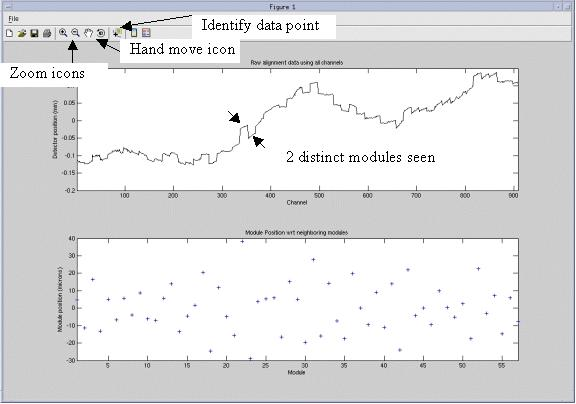
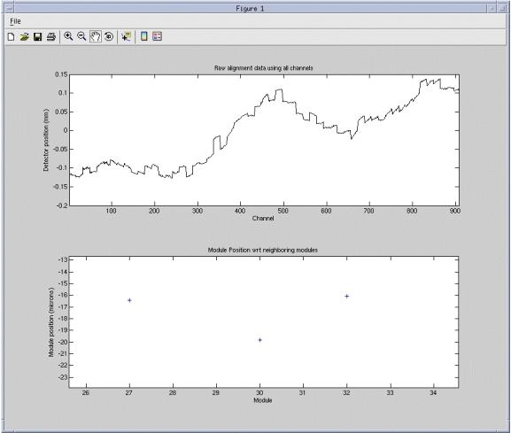
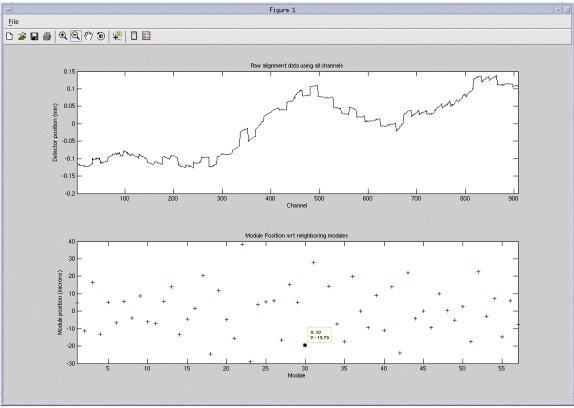
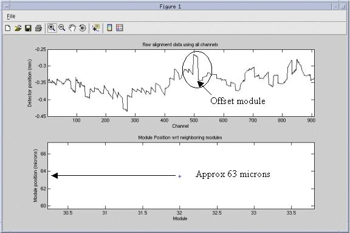

Operating Documentation
Direction 5193575-800, Rev# 5
LightSpeed 7.X Service Information - Adv
Operating Documentation |
| Last Revised: | June 5, 2008 |
The zalignmentWizard is used to check the relative alignment of all detector modules in the detector. The key alignment is module to module across the detector. Each module must be within a specified distance of the module on each side. That is to say the module 3 must be close in alignment to both module 2 and module 4.
The alignment check is automatically run by the MiniCheck process in the FRDM Replacement Wizard. To start it manually, if needed, use the following instructions.
Make sure nothing is between the tube and detector including the table, test assumes air scan data collection.
From a Unix shell, type zalignmentWizard to manually run the detector module alignment check outside of the FRDM Replacement Wizard.
The tool will setup and run a scan. Press the Scan button when requested. After the scan completes, automated processing will start. In approximately 2 minutes the following plot seen in Illustration 1 will be displayed.
Illustration 1: Alignment plot window

The following features as shown in Illustration 1 are available.
Save the plot as a jpg, gif, tiff, from the File menu – Save as feature.
Zoom in and out using magnifying glass icons.
Shift displayed plot within window using the hand icon.
Identify data point using cursor select.
The top graph shows the complete detector module absolute positions. The plot typically shows stair step divisions each of which is 16 channels of one detector module. Modules exactly in alignment with each other will show as a continuous line.
The bottom graph shows the module position with respect to its two neighbors. Each data point is the average distance between each edge of the module and the edges of the neighbor modules. Smaller offset values in the bottom graph indicate better alignment. As can be seen in Illustration 1, all modules are within +40/-30 microns as seen on the bottom graph scale to the left. The top and bottom graphs autoscale to fit the data.
Illustration 2 below shows the bottom graph expanded using the magnifying glass icon. Selecting the magnifying glass and then mouse selecting any data point will zoom the graph and center on the selected data point. In this example module 30 was selected.
Illustration 2: Example Zoom

In Illustration 2, module 30 can be seen to be approximately –20 microns offset from its neighbors. The hand function can be used to shift the bottom graph up and down to allow easier viewing of the data point with respect to the scale. For instance, drag the data point toward the left scale to easier read the value if in question.
Illustration 3 shows an example of using the Identify data point icon from the toolbar. This is the preferred method of reading plot data points. Select the [Identify data point] icon then cursor select any data point on either graph. In this example module 30 was selected that identifies the data point as #30 with a value of 19.79.
Illustration 3: Identify data point example

After exiting the plot, the plot can be pulled up again by running the following command from a Unix shell: run_modalign /usr/g/service/state/Ccal_small_32x0.625.sprp
This can be done anytime except after a collimator cal as the collimator cal also uses the same file name as temporary data storage during it’s processing so the file is overwritten.
To save a file for later reference use the following commands from a Unix shell:
cd /usr/g/service/state
cp Ccal_small_32x0.625.sprp Ccal_small_32x0.625.sprp.savedfile
The “savedfile” suffix can be changed to anything else like a date/time value. The only requirement is that the base filename must remain as is. Only add a suffix as a unique identifier.
Illustration 4 shows a detector alignment plot that has a module out of alignment from the rest near the center. The bottom plot has been magnified to show that module 32 is approximately 63 microns offset from its neighbors.
Illustration 4: Example module alignment

In the example of module 32 in Illustration 4, the detector would need to be opened again and module 32 would need to be loosened and re-seated against the back rail. Follow module replacement instructions for performing this process.
When putting in 3 or more modules next to each other, an offset can occur with all modules shifted if they are not properly adjusted against the detector back rail following the module installation instructions. Illustration 5 below shows a signature that can occur if the center module set (5 modules) is not positioned using the bias tool.
Illustration 5: Center module set offset example

Note the signature of the center 5 modules (27-31) shown in Figure 5 for the top and bottom plots. Only the outer edge modules of the center 5 show as out of alignment in the bottom plot. The top plot clearly shows the offset of all 5 of the center modules. The bottom plot signature occurs as the center 3 modules (28-30) are in proper alignment to each other and to modules 27 and 31.
Modules 26, 27 and 31, 32 are showing alignments different from the rest of the detector when in fact only the center set is out of alignment. Since the module edge between 26 and 27 is used to calculate the average offset for both modules, both modules show an effect in the bottom graph. The same is true for modules 31, 32. This is where the top plot and bottom plot must both be reviewed to show the real alignment issue.
Repositioning the center set using the bias tool will then show all modules back in alignment. The values for 26 and 32 will also come back down when modules 27 – 31 are positioned against the detector back rail as intended.